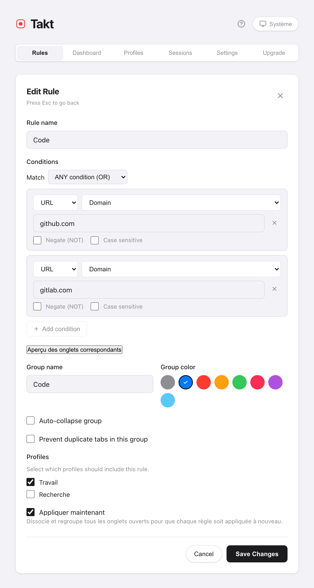

En bref : si 5 règles, ou 5 groupes automatiques, couvrent les sites que vous utilisez, le plan Free suffit.
- Free : 5 règles, 5 groupes Catégorie/IA, 5 onglets en hibernation, prévention des doublons, suspension automatique, actions rapides.
- Premium : aucune limite, motifs de règles avancés, Quick Switch, sessions, profils, tableau de bord des ressources, sauvegarde et synchronisation.
- Les deux plans : aucun compte, aucune statistique d'usage, les mêmes 6 langues.
Que comprend chaque plan ?
Chaque ligne ci-dessous a été vérifiée dans le code source de Takt, pas dans la fiche du Chrome Web Store.
| Fonctionnalité | Free | Premium |
|---|---|---|
| Regroupement | ||
| Règles de regroupement | 5 | Illimitées |
| Types de correspondance | Contient, exact, domaine | + glob, regex |
| Correspondance sur le titre de la page | Non | Oui |
| Conditions par règle | 1 | Jusqu'à 10, avec AND/OR |
| Modes de regroupement (Règles, Catégorie, IA, Aucun) | Les 4 | Les 4 |
| Groupes créés en mode Catégorie ou IA | Jusqu'à 5 | Illimités |
| Suggestions de règles (volet Suggestions du popup) | Les 3 premières | Toutes |
| Suggestions de règles par IA | Dans la limite de vos emplacements de règles gratuits | Illimitées |
| Créer une règle par clic droit sur une page | Non | Oui |
| Groupe « Autres » pour les onglets sans correspondance | Non | Oui |
| Rangement | ||
| Grouper, dégrouper, réduire, développer, fermer les doublons | Oui | Oui |
| Raccourcis Alt+Shift+G / U / C | Oui | Oui |
| Prévention des onglets en double | Oui | Oui |
| Trier par domaine | Fenêtre actuelle | Toutes les fenêtres |
| Réduction automatique des autres groupes | Même fenêtre | + autres fenêtres |
| Fermer, mettre en signet ou déplacer un groupe entier | Non | Oui |
| Mémoire | ||
| Suspension automatique des onglets inactifs | Oui | Oui |
| Onglets en hibernation conservés simultanément | 5 | 200 |
| Hibernation automatique (inactivité, nombre d'onglets, fin de planification) | Non | Oui |
| Tableau de bord des ressources et budgets mémoire | Non | Oui |
| Retrouver et conserver ses onglets | ||
| Recherche dans les onglets ouverts depuis le volet Tabs du popup | Oui | Oui |
| Quick Switch (Alt+Shift+Space), y compris onglets en hibernation et historique | Non | Oui |
| Sessions enregistrées (jusqu'à 50), sauvegarde automatique à la fermeture d'une fenêtre | Non | Oui |
| Profils et planifications | Non | Oui |
| Import et export JSON | Non | Oui |
| File Sync et Google Drive Sync | Non | Oui |
| Partout | ||
| Langues, thème clair/sombre | 6, tous les thèmes | 6, tous les thèmes |
| Compte, statistiques d'usage | Aucun | Aucun |
Deux précisions sur les limites du plan Free. La limite de 5 règles inclut les 2 règles de départ que Takt ajoute à l'installation ; supprimez-les si vous ne vous en servez pas. La limite de 5 groupes des modes Catégorie et IA compte tous les groupes d'onglets ouverts dans Chrome, y compris ceux que vous avez créés à la main.
Combien coûte Takt Premium ?
3 $ par mois ou 30 $ par an. Le plan annuel fait économiser environ 17 %. Passez à Premium depuis la page d'options, dans l'onglet Upgrade. Le paiement et la vérification du plan passent par ExtensionPay. Pour utiliser Premium sur un autre ordinateur, cliquez sur Déjà payé ? Connectez-vous pour restaurer votre abonnement dans ce même onglet.
Ai-je besoin de Premium ?
Souvent, non. Restez sur Free si :
- Vous passez vos journées sur une poignée de sites. Cinq règles de domaine couvrent beaucoup : code, documentation, messagerie, dev local, vidéo.
- Vous préférez ne pas écrire de règles. Le mode Catégorie regroupe par type de site, et 5 groupes suffisent souvent.
- Votre problème, ce sont les doublons ou la mémoire. La prévention des doublons et la suspension automatique sont gratuites.
Premium vaut le coup si :
- Vous avez besoin de plus de 5 groupes, ou de motifs comme « toutes les pull requests » (glob ou regex).
- Vous cherchez vos onglets au clavier toute la journée. C'est Quick Switch.
- Vous passez d'un projet à l'autre et voulez enregistrer un espace de travail pour le rouvrir plus tard. Ce sont les sessions.
- Vous séparez les règles du travail et de la maison, ou vous utilisez plusieurs ordinateurs. Ce sont les profils et la synchronisation.

Que se passe-t-il à la fin d'un abonnement Premium ?
Takt vérifie votre plan au démarrage, puis toutes les 15 minutes. Une fois l'abonnement terminé, les limites du plan Free s'appliquent de nouveau. Takt ne supprime rien :
- Les règles restent toutes, mais seules les 5 premières de votre liste restent actives. Parmi elles, les règles à condition unique de type contient, exact ou domaine continuent de regrouper ; celles à plusieurs conditions, avec une condition sur le titre, ou avec un motif glob ou regex cessent de s'appliquer. Les règles après la cinquième sont mises en pause. Vous ne pouvez pas ajouter de nouvelle règle tant que vous en avez 5 ou plus.
- Les onglets en hibernation restent, et vous pouvez les réactiver. Vous pourrez en mettre de nouveaux en hibernation une fois sous la barre des 5.
- Les sessions restent stockées, mais il faut de nouveau Premium pour enregistrer et restaurer.
- Les profils cessent de s'appliquer. Toutes vos règles fonctionnent ensemble, comme si aucun profil n'était actif.
- Les modes Catégorie et IA repassent à 5 groupes.
Réabonnez-vous et tout fonctionne comme avant.
Ce que Premium ne change pas
- La confidentialité est la même sur les deux plans. Aucun compte, aucune statistique d'usage. La vérification du plan passe par ExtensionPay ; voir ce que Takt fait de vos données.
- La synchronisation fonctionne sur les deux plans. Vos règles et réglages se synchronisent entre vos ordinateurs via la synchronisation Chrome sur les deux plans ; en Free, cela couvre vos 5 règles.
- Les outils de Chrome restent disponibles. L'Économiseur de mémoire et la synchronisation des groupes d'onglets sont gratuits et intégrés. S'ils vous suffisent, vous n'avez peut-être pas besoin de Takt du tout.
Commencez gratuitement. Passez à Premium seulement si vous atteignez une limite.
Ajouter Takt à Chrome, gratuitementQuestions fréquentes
Takt est-il gratuit ?
Oui, sans limite de durée. Le plan Free comprend 5 règles, le regroupement par catégorie et par IA jusqu'à 5 groupes, la prévention des doublons, la suspension automatique, l'hibernation manuelle de 5 onglets au maximum, ainsi que les actions rapides et les raccourcis.
Combien coûte Takt Premium ?
3 $ par mois ou 30 $ par an. Le plan annuel revient environ 17 % moins cher.
Est-ce que je perds mes règles si j'arrête de payer ?
Non. Takt ne supprime rien. Les 5 premières règles de votre liste continuent de fonctionner si elles utilisent une seule condition contient, exact ou domaine. Toutes les autres sont mises en pause jusqu'à ce que vous vous réabonniez.
L'import et l'export sont-ils gratuits ?
Non. L'import et l'export JSON, File Sync et Google Drive Sync font partie de Premium. Voir sauvegarder et synchroniser votre configuration.